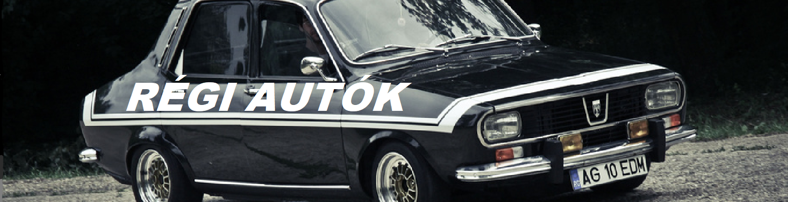

Régi Autók
Régi korok , régi autói. Mindegyik kornak volt egy fajta hangulata, atmoszférája, amelyet ezek a gép csodák vissza idéznek valamelyest. Ez az oldal ezeket az autókat gyűjti össze.
Ezeket az autókat régiók szerint szétoszthatjuk:
- A keleti blokk autói
- Az amerikai autók
- A nyugat-Európai autók
Ez az oldal a magyarokhoz közel álló keleti blokk autóival foglalkozik. A sajátos listám, így néz ki:
- Trabant 601
- Dacia 1300
- Lada 2101
Leírások:
DACIA 1300:
A gyártáskor a Dacia a Renault 12-t vette alapul műszakilag és a formaterv szempontjából is.[2] Az elkészült autók nagy többsége a kommunista keleti blokkban került eladásra. Egyes országokban a kocsi Dacia Denem néven került piacra.
Az 1300-on néhány évente végeztek kisebb külső átalakításokat, hogy így próbálják meg az embereket érdekeltté tenni az újabb évjáratú modellek megvásárlásában. Mivel ezek a változások meglehetősen aprók voltak, a dizájn hamar idejétmúlttá vált, csakúgy, mint a műszaki felépítés. Az évek alatt olyan újítások jelentek meg az autóiparban, mint például a klíma vagy az ABS, de ilyen modern berendezések soha nem kerültek be a Dacia 1300-ba.
Az autó a szedán és a kombi változat mellett pick-up változatban is elérhető volt, mely Dacia 1302 vagy Dacia Pick-Up néven szerepelt a kínálatban.
TRABANT 601:
A Trabant 601 háttértörténetét tanulmányozva hamar világossá válik, hogy ez a modell volt a Német Demokratikus Köztársaság válasza a nyugat-német népautóra, a Volkswagen Bogárra.[1][2] Megtervezésekor az volt a cél, hogy egy olcsó, de megbízható autó jöjjön létre, melynek javítása és fenntartása is egyszerű és kis költségekkel jár. A maga idejében a Trabant 601 több szempontból is modernnek számított, elsőkerék-meghajtása, alacsony fogyasztású motorja, önhordó, kompozit elemekből felépülő karosszériája és független felfüggesztése miatt. Az idő előrehaladtával az egyetlen komoly hátrányt takarékossága ellenére a második világháború előttről származó, DKW alapokon nyugvó kétütemű motor jelentette.
Az 1950-es évek végétől kezdve a nyugati autógyártól sorra kezdték el kicserélni kiskategóriás modelljeik kétütemű motorjait a tisztább égésű és kevesebb káros-anyagot termelő négyüteműekre. A 601 riválisa, a Volkswagen Bogár már a kezdetektől fogva, 1938 óta négyütemű motorral készült, ennek ellenére akadtak nyugat-német autók, melyekben kétütemű motor volt, például az Auto Union 1000, melynek gyártása 1963-ban fejeződött be. A svéd Saab 96 gyártása szintén kétütemű motorokkal kezdődött meg 1960-ban, de 1967-től kezdve ezeket négyüteműekre cserélték. Az NDK-ban azonban kevés pénz jutott fejlesztésekre, így a Trabant 601 mindvégig kétütemű motorral készült, mely az 1960-as években még elfogadható volt, az 1980-as évektől kezdve azonban ritkaságszámba ment és rendkívül elavultnak számított. A Trabant legsikeresebb és legismertebb modelljének a gyártása 1990-ben fejeződött be, helyét a Trabant 1.1 vette át, amely már négyütemű Volkswagen motorral készült.
LADA 2101:
A VAZ–2101 (Lada 1200) sorozatgyártása a Volgai Autógyárban 1970-ben kezdődött meg, eleinte a Fiat mérnökeinek közvetlen irányítása alatt, illetve az olasz autógyár folyamatos technológiai támogatásával. Ezzel egyidőben a szovjet mérnökök megkezdték a 2101-es modellen alapuló további típusváltozatok kifejlesztését, továbbra is erősen hagyatkozva olasz kollégáik szakmai támogatására.
A 2101-es alapmodell és az abból kifejlesztett első modellvariánsok sorozatgyártása az 1980-as évek közepéig tartott, miközben a gyár folyamatosan vezette be az erősen felújított, de még mindig a Fiat 124 megoldásain alapuló VAZ–2104, VAZ–2105 és VAZ–2107 típusok, illetve a műszakilag teljesen új Lada Samara modellcsalád gyártását.
Gyártási év szeinti elrendezés
| Típus: |
Gyártási év: |
| Tabant 601 |
1963-1990 |
| Dacia 1300 |
1969-2004 |
| Lada 2101 |
1970-1988 |
Források:
Dacia 1300
Trabant 601
Lada 2101